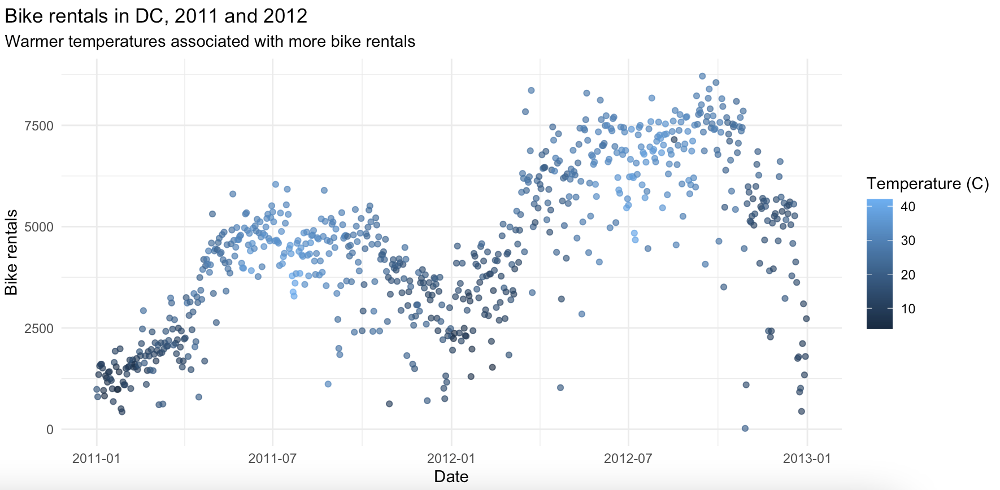

HW 03 - Bike rentals in DC
Bike sharing systems take traditional bike rentals but automate the entire process (membership, rental, return, etc.). Through these systems, users are able to easily rent a bike from a particular position and return it at another position. There are hundreds of bike-sharing programs around the world comprising hundreds of thousands of bicycles. Today, there exists great interest in these (and other “alternative” transit) systems due to their important role in traffic, environmental, and health issues.
Apart from interesting real world applications of bike sharing systems, the characteristics of data being generated by these systems make them attractive for research. Opposed to other transport services such as bus or subway, the duration of travel, departure and arrival position is explicitly recorded in these systems. This feature turns bike sharing system into a virtual sensor network that can be used for sensing mobility in the city. Hence, it is expected that most of important events in the city could be detected via monitoring these data.
Source: UCI Machine Learning Repository - Bike Sharing Dataset
Getting started
Here are the steps for getting started:
- Start with an assignment link that creates the GitHub repo with starter documents (link on Canvas).
- Clone this repo into RStudio on datahub
- Make any changes needed as outlined by the tasks you need to complete for the assignment
- Periodically commit changes (for example, once per each new part)
- Push all your changes back to your GitHub repo
- This assignment will be graded from GitHub.
Your final GitHub push prior to the deadline will be used for grading. (This means even if you made mistakes before that submission on GitHub, you won’t be penalized for them, so long as the final state of your work is correct).
Data
The data are provided for you in data/bikeshare-day.csv
These data include daily bike rental counts (by members and casual users) of Capital Bikeshare in Washington, DC in 2011 and 2012 as well as weather information on these days.
The original data sources are http://capitalbikeshare.com/system-data and http://www.freemeteo.com.
The codebook is below:
| Variable name | Description |
|---|---|
instant |
record index |
dteday |
date |
season |
season (1:winter, 2:spring, 3:summer, 4:fall) |
yr |
year (0: 2011, 1:2012) |
mnth |
month (1 to 12) |
holiday |
weather day is holiday or not (extracted from http://dchr.dc.gov/page/holiday-schedule) |
weekday |
day of the week |
workingday |
if day is neither weekend nor holiday is 1, otherwise is 0. |
weathersit |
1: Clear, Few clouds, Partly cloudy, Partly cloudy |
| 2: Mist + Cloudy, Mist + Broken clouds, Mist + Few clouds, Mist | |
| 3: Light Snow, Light Rain + Thunderstorm + Scattered clouds, Light Rain + Scattered clouds | |
| 4: Heavy Rain + Ice Pallets + Thunderstorm + Mist, Snow + Fog | |
temp |
Normalized temperature in Celsius. The values are divided by 41 (max) |
atemp |
Normalized feeling temperature in Celsius. The values are divided by 50 (max) |
hum |
Normalized humidity. The values are divided by 100 (max) |
windspeed |
Normalized wind speed. The values are divided by 67 (max) |
casual |
Count of casual users |
registered |
Count of registered users |
cnt |
Count of total rental bikes including both casual and registered |
Setup
You are free to utilize any packages in this homework. We think you’ll likely use tidyverse, tidymodels (…and maybe olsrr)
Questions
Data wrangling
Question 1
Recode the season variable to be a factor with meaningful level names as outlined in the codebook, with spring as the baseline level.
Question 2
Recode the binary variables holiday and workingday to be factors with levels no (0) and yes (1), with no as the baseline level.
Question 3
Recode the yr variable to be a factor with levels 2011 and 2012, with 2011 as the baseline level.
Question 4
Recode the weathersit variable as 1 - clear, 2 - mist, 3 - light precipitation, and 4 - heavy precipitation, with clear as the baseline.
Question 5
Calculate raw temperature, feeling temperature, humidity, and windspeed as their values given in the dataset multiplied by the maximum raw values stated in the codebook for each variable. Instead of writing over the existing variables, create new ones with concise but informative names.
Question 6
Check that the sum of casual and registered adds up to cnt for each record.
Exploratory data analysis
Question 7
Recreate the following visualization, and interpret it in context of the data. Hint: You will need to use one of the variables you created above.

Question 8
Create a visualization displaying the relationship between bike rentals and season. Interpret the plot in context of the data.
Modelling
Question 9
Fit a linear model predicting total daily bike rentals from daily temperature. Write the linear model, interpret the slope and the intercept in context of the data, and determine and interpret the \(R^2\).
Question 10
Fit another linear model predicting total daily bike rentals from daily feeling temperature. Write the linear model, interpret the slope and the intercept in context of the data, and determine and interpret the \(R^2\). Is temperature or feeling temperature a better predictor of bike rentals?
Question 11
Fit a full model predicting total daily bike rentals from season, year, whether the day is holiday or not, whether the day is a workingday or not, the weather category, temperature, feeling temperature, humidity, and windspeed, as well as the interaction between at least one numerical and one categorical variable.
Question 12
Perform backward selection using adjusted \(R^2\) as the decision criterion to find the “best” model. Provide the model output for the final model.
Question 13
Interpret slope coefficients associated with two of the variables in your final model in context of the data. Note: If one of these is categorical with multiple levels, make sure you interpret all of the slope coefficients associated with the levels of the variable.
Question 14
Based on the final model you found in the previous question, discuss what makes for a good day to bike in DC (as measured by rental bikes being more in demand).
Submission
Be sure to knit your file to HTML, look at the output HTML file to make sure everything looks as you expected, and then commit and push your final changes to GitHub. We will be grading from the HTML file. Before you wrap up the assignment, make sure all documents are updated on your GitHub repo.